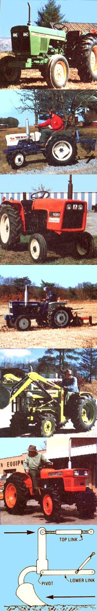
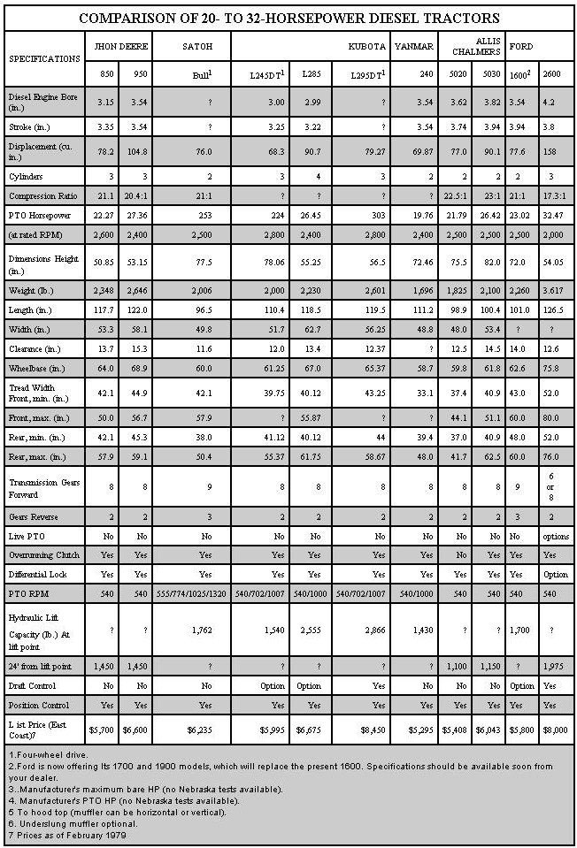

About 10 years ago-when I was in the market for a new tractor-I naively approached a local dealer with the following question: "How much machine do you think I need?" At the time I was about seven acres of land, and his rep went something like this: "The old rut of thumb says to allow four horsepower for each acre you plan to work. In your case that figures out to be around 28 HP ... and I just happen to have exactly what you need right here on the lot."
Of course, dealer inventories were generally much smaller then-and Mere wasn't as great a choice of equipment as there is today-so it's possible that the salesman's "rule of thumb" varied according to what he had on hand at the time. However, in the decade that I owned that tractor, I never once regretted having bought it ... though I now know that I could've made a wiser choice had I been more familiar with agricultural machinery and its uses.
Today, on the other hand, there re dozens of competitive tractors-in the "general purpose" 20 to 32-horsepower range-to choose from. Most of these as excellent machines-ranging in price from about $5,000 to $8,500-and all of them are versatile enough to make my "ol' Betsy" turn green with envy. In fact, in terms of precision engineering and religion ability, the modern "workhorse"- replete with its stableful of optional attachments-is probably one of the best bargains available to the consumer today. What with four-wheel drive, fuel-stingy powerplants, reduced weights, and ingenious design features, the contemporary tractor doesn't have to be nearly as big as its predecessor to get the same job done ... and often can perform those chores better and more economically! But, you still ham to match certain special features to the kind of work &at Me machine will be expected to handle.
YOUR INITIAL INVESTMENT AIN'T THE WHOLE STORY: Many folks have a tendency to minimize their initial tractor costs by selecting the smallest machine that'll do Me ME However, that first expense is only one factor to consider when buying a "mechanical mule" . . . labor cost and work time are two other important considerations. While both large and small tractors only require one operator, the bigger machines can often complete a given task in a shorter period ... and the time saved-which may also reduce labor costs-can more Man offset an initial difference in price. This line of thought could be especially important for the part-time farmer: He or she may have only a few hours to work around the place during a short spell of good weather, and the larger tractor might just make it possible to get the job done between downpours.
TERRAIN AND SOIL TYPE: Remember that hillcountry farming will require a tractor with more horsepower than will level terrain work. In fact, a general-purpose machine needs between 5 and additional horsepower to pull a tillage implement up even a modest grade ... and operating an "anemic" vehicle under such conditions will prove to be uneconomical-in terms of fuel economy and repair bills-in the long run. Your tractor should have enough power to disc or plow at a normal speed (2-1/2 to 4 MPH) without forcing you to shift to a lower gear while traversing the field,
Soil type, and even local climate, may influence your choice, too. You'll need more traction in dry sand and sandy loam than in dry clay soil ... while wet earth demands more "grip" than does dry. These considerations might warrant the choice of a heavier tractor than would be needed on a farm without traction problems ... and could even make optional four-wheel-drive capability worthwhile.
ENGINE LUGGING ABILITY: Lugging ability refers to the capacity of an engine to maintain its pulling force during a momentary overload, and this is where diesel units prove themselves to be "naturals" for tractor work. At normal speeds of 1,500 to 3,000 revolutions per minute (RPM), the torque of a diesel (the twisting force developed by the engine)-unlike that of a gasoline powerplant -actually increases as its RPM drops. In other words, when a diesel tractor encounters a hill-or when the baler working along behind it takes an oversized bite of hay the machine just chugs along with minimal loss of power, while a gasoline engine would slow and strain under the same circumstances.
With these general points in mind, I strongly recommend that-as your decision narrows down to one or two machines-you ask the salesman for a demonstration on your property before you buy. Most dealers welcome the chance to show what their equipment will do. So test the lugging ability on your hills-while pulling a moldboard or chisel plow-and note the machine's traction on both sod and cultivated soil.
In the accompanying table I've compared the specifications of several of the best diesel tractors in the 20- to 32 horsepower range. These are by no means the only units to choose from, but they're all quality machines and offer a full range of the special features available in this weight and power class.
Although most of the "specs" in the chart are easily understood, there are several that might need clarification.
LIVE PTO: On most models in the 20- to 32 horsepower range, the power takeoff (PTO) at the rear of the machine-and, of course, the tractor's forward motion-will stop when the clutch pedal is depressed. With a live PTO, on the other hand, you can halt the tractor without interrupting power flow to the PTO.
The principal advantage to live PTO is that it allows you to start rotating the blades of a bush hog (or the tines of a rotovator) before you get the tractor itself underway. This reduces the initial load on the engine ... which would otherwise have to overcome the inertia of the vehicle and the implement at the same time.
Most hay balers, silage cutters, and combines require a tractor with a live PTO. From time to time these implements must be allowed to "clear" themselves before taking in more material, and the "live" option will handle-such a chore quickly and easily.
OVERRUNNINGCLUTCH: An overrunning clutch permits power to be transmitted in one direction only. Should the output side of the clutch start to turn faster than the input side (due to the "push" provided by a driven attachment), the clutch will automatically uncouple. This feature is built into the drive mechanism of the PTO-in most of the tractors summarized in the table-to prevent the backup torque of an implement (such as the heavy, swinging blades of a bush hog for "sample) from damaging the transmission or pushing the tractor.
DRAFT CONTROL: Several machines in the 1979 Ford line offer a draft control option, and such capability may be available on the Kubota L245DT and L285 in the near future. To appreciate the value of this feature, take a minute to examine Me attachment points of a typical moldboard plow, as shown in the drawing (page 124). Me lower links of the tractor's hitch support the implement and pull it along. As the cutting edge digs into the ground, the whole device tends to pivot at the lowerlink pins, and this action provides a forward pressure against the top link.
Draft control is a simple but effective means of keeping the plow working at a nearly uniform depth. Because of its shape, the advancing plow blade tends to cut deeper and deeper into the soil ... and the forward pressure on be top NA (due to the mounting resistance of the earth) increases.
With draft control, this forward pressure is absorbed-to a point-by a powerful spring within the top-link attachment. Then-when the spring's limit is exceeded-the pressure on the upper link activates a lever in the hydraulic mechanism ... which in turn operates a control valve that transfers just enough hydraulic fluid to raise the lower links a bit and lift the blade. As the implement rises (and contacts less soil), the pressure on the top link decreases and the blade resumes its tendency to dig in.
If you plan to use soil-contacting implements (such as a plow, subsoiler, or rearmount scrape blade) extensively, draft control is a time-saver well worth the price ... but it isn't an essential feature. However, should your choice of tractor lack draft control, you can achieve nearly the same advantages by purchasing implements fitted with adjustable side wheels which directly limit working depth.
POSITION CONTROL: All of the vehicles hoed am equipped with position control, a means of bringing an implement to the same point (relative to the tractor) each time the lower links are returned from the raised to the "working" setting. Be sure to check out this option before you buy, however, because there am several systems used to accomplish this task ... and some are definitely better than others. The best of the bunch are those mechanisms which are directly connected to the draft control unit.
A diesel is an internal combustion engine in which the fuel is ignited by the heat of compression rather than by an electric spark. While a diesel will cost more than a comparable gasoline engine,
this initial difference is usually offset by lower long-term maintenance costs. It is not uncommon for highway diesels to log half a million miles or more between routine overhauls, and a tractor equipped with one of these powerplants should provide many thousands of trouble-free working hours.
Since a diesel has no electric ignition system or carburetor, the usual on-the-farm servicing consists of little more than cleaning and replacing the air and fuel filters, and checking and changing the oil ... operations that require a minimum of time and no special skills.
It isn't necessary to be a full-fledged diesel mechanic to make a good tractor choice, either. There are, however, a few features often quoted by manufacturers (and listed in the chart that follows) which probably could use a little explanation:
BORE, STROKE, AND TOTAL ENGINE DISPLACEMENT: The diameter of one engine cylinder is referred to as the bore, and the distance the piston moves within the cylinder in its up-and-down travel is called the stroke. Since the bore is actually nothing more than the diameter of a circle the formula pie r 2 (or 3.14 times Me square of half the bore) can be used to calculate the cross-sectional area of an engine cylinder ... and this area multiplied by the length of the stroke equals the displacement volume of one cylinder. To get the total engine displacement, multiply this figure by the number of cylinders in the engine. This is the specification that's quoted in most manufacturer's information tables.
COMPRESSION RATIO: The compression ratio is also a function of bore and stroke. If a cylinder holds 44 cubic inches of air when the piston is at the bottom limit of its stroke, and only 2 cubic inches at the top of the stroke, then the compression ratio is 44 to 2, or 22:1.
Generally speaking, compression ratios are higher in small diesel tractor engines than in larger industrial powerplants. The little diesels-which are less massive-lose heat faster ... so, in order to maintain the temperature needed to ignite the fuel, small tractor engines generally feature relatively high compression ratios.
HORSEPOWER: This is one specification that's often misleading ... because of the way it's expressed. You see, the horsepower of a diesel engine varies with the total displacement, the pressure in the cylinders, and the revolutions per minute. Hence, any useful indication of horsepower should include a statement of the RPM as a point of reference.
Unfortunately, there isn't much uniformity among agricultural implement manufacturers when it comes to expressing horsepower. Most U.S. firms indicate the PTO horsepower which-because of frictional loss of power in the engine and drive train-is lower than "maximum bare horsepower", or "manufacturer's estimated maximum horsepower". Therefore, in the accompanying table I've quoted the "maximum PTO horsepower at rated engine speed"-based on independent University of Nebraska tests-wherever possible.
For a more accurate "yardstick" to measure your prospective tractor's muscle, I suggest you take another look at "displacement" . . . and simply compare machines on that basis if the horsepower ratings seem a bit confusing. Better yet, your dealer (or the local library) may have a copy of the January 1979 Implement and Tractor Red Book. You'll find an excellent summary of the University of Nebraska tests-with accurate information on whatever tractor you choose-included there.
Considering the excellent track record of the diesel engine, the top-notch reputation of the equipment manufacturers listed in the accompanying chart, and the years of experience behind the engineering of tractor transmissions and hydraulic systems in general ... I see no reason why one of these 1979 models-if properly maintained -shouldn't still be chugging along nearly good as new in the year 2000!
However-in order to insure that your proud purchase won't be destined for an early grave-it's important that you do your homework before you make your final choice. Be certain to inquire about repair facilities, and make sure that the dealership has a skilled diesel mechanic on hand (and the necessary technical backup of a nearby regional plant ... just in case a particularly difficult problem develops).
It also wouldn't do any harm to ask around about the service records of dealerships in your area. Some agencies will "bend over backward" to accommodate a customer with equipment problems, while a few- unfortunately-show little compassion after a sale is made.
All in all, this year's crop of mid-sized diesel tractors is better than ever ... especially since the manufacturers are continually striving to improve the versatility and reliability of their products. Better yet, these intermediate machines are-dollar for dollar-a far better buy than the typical fuel-hungry behemoths ... since the mid-sizers can perform the same tasks as the monsters (to a point), cost a good deal less, and aren't nearly as expensive to operate!
So, whether you're an experienced farmer who's in the market for a replacement for the "old standby", or a new homesteader who's ready to spring for his or her first tractor ... be sure to look into today's line of commonsense intermediates. Chances are you'll be very pleasantly surprised!
|
 Photo by the Author |
 |
|